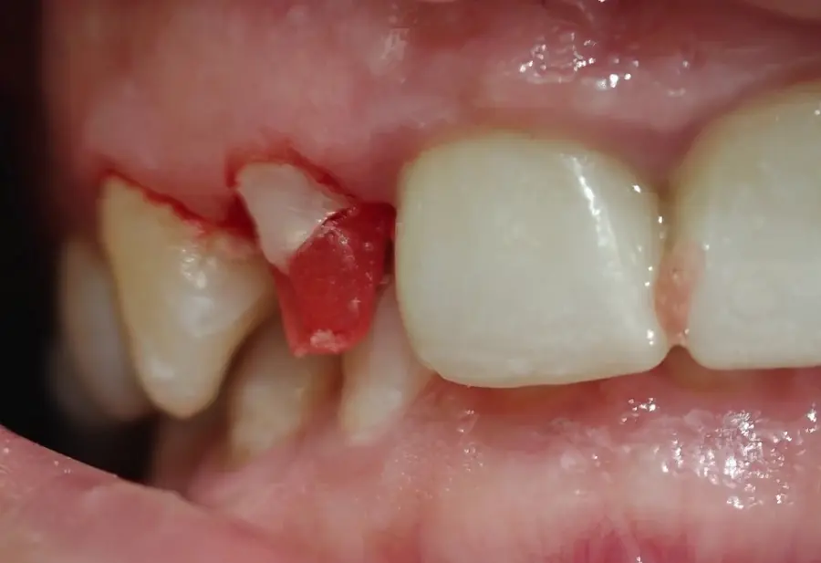

نسخه استخراجشده؛ ترجمه یا تأیید علمی انجام نشده است. وضعیت: captured
بیمار دیپبایت است و کور آکریلی قدامی را ساختهای. در یک نقطهی ثابت، فضا برای روکش کافی به نظر میرسد. اما در حرکت طرفی، کور کاملاً با دندان مقابل برخورد میکند و هیچ فضایی برای ضخامت روکش در مسیر حرکت باقی نمیگذارد.

در ساخت پست و کور قدامی، فضا (Clearance) را نباید فقط در حالت استاتیک چک کرد. قضیه فقط رفع تداخل در یک نقطهی ثابت نیست: فضایی که برای ضخامت متریال روکش نهایی در نظر گرفتهای، باید در تمام طول مسیر حرکات طرفی و پروتروزیو به همان اندازه حفظ شود.
کلیرنس دینامیک یعنی فضای باقیمانده بین کور و دندان مقابل، سنجیدهشده در سرتاسر مسیر حرکات بهجای یک موقعیت ثابت اکلوزال. معیار کفایتش ضخامت متریال روکش نهایی است: کلیرنس وقتی کافی است که این ضخامت در هر نقطه از مسیر حرکت جا بگیرد.
موقع امتحان و تحویل روکش با یکی از این دو روبهرو میشوی:
در بیمار دیپبایت این مسئله بهمراتب حیاتیتر است. همپوشانی عمودی زیاد قدامی، فضایی را که کور و روکش در آن حرکت میکنند تنگ میکند؛ خطای کلیرنس حرکتی زودتر و شدیدتر بروز میکند و میتواند تا برخورد کامل کور با دندان مقابل در حرکت طرفی پیش برود.